Overview
Give a high-level overview of what you implemented in this project. Think about what you've built as a whole. Share your thoughts on what interesting things you've learned from completing the project.
Section I: Rasterization
Part 1: Rasterizing single-color triangles
We use a three line test to check if a point was inside the triangle. To do the three line test, we defined the line as two planes such that if L(x, y) > 0, then it’s above the line, = 0 on the line, and < 0 is below the line. With the line test along with the correct ordered pair of coordinates, we can check that a point is inside the triangle and on the edge of the triangle by setting L(x, y) >=0. Doing this to all three sides of the triangle and if all three returns true, then it means the point is inside the triangle. If a point is inside the triangle, then we use sample_buffer to set the color of the pixel. Our algorithm is the same as the one that checks each sample within the bounding box of the triangle which we use min{x0, x1, x2} as lower bound of x and max{x0, x1, x2} as the upper bound of x. Then, we use min{y0, y1, y2} as the lower bound of y and max{y0, y1, y2} as the upper bound of y.
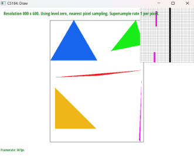Part 2: Antialiasing triangles

We first use a width*height*sample_rate as our basic data structure for supersampling. Within the supersampling array, we decided to have the sampling of 1 pixel consecutively. We were able to do this with the following equation, (y*width + x)*sample_rate + m + (n*sqrt(sample_rate)), y as # of pixel downwards, x as # of pixel to the right, m as # of pixels to the sample within a pixel, and n as the number of samples downwards within a pixel all with 0 indexing. In order to do the supersampling, we had a for loop that would go through each pixel within the bounding box of the triangle and within each pixel, we created a for loop to sample at the sampling rate with sqrt(sample_rate)*sqrt(sample_rate). In order to check that a sample is within a triangle, we set the first sample as 1/(2*sqrt(sample_rate)), then after each iteration of the for loop, we would add it by 1/(sqrt(sample_rate)) such that it can check for the next sample. We used the inside function to check if the sample is inside the triangle, and if it is, then we use the following formula to set the color: (y*width + x)*sample_rate + m + (n*sqrt(sample_rate)). For averaging down, we collected the sum of the colors for the sample within the pixel, then dividing it by the sample_rate, and finally multiplying it by 255 to resolve to framebuffer. Supersampling is very useful for getting rid of jaggies because it does not work with 1 single color, but also it works with sample_rate colors which makes jaggies more natural. Having a higher sample_rate works well to antialias the triangles as it works well to make smoother jaggies.
Part 3: Transforms
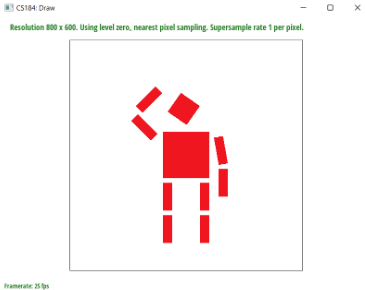This cubeman is waving, with its head slightly raised towards its left arm (from our perspective) due to its raised shoulders. Its right upper arm has a slight slant, and its right lower arm goes down straight with gravity.
Section II: Sampling
Part 4: Barycentric coordinates
Suppose we have points A, B, and C on our triangle. For any other point (x,y), we can express this point as (x,y) = A+B +C for ++=1. Geometrically speaking, for any of the constants denoted by the Greek variables, the distance from (x,y) to the Greek variable’s corresponding vertex ( to A, to B, and to C), along the line perpendicular to the opposite edge, is equal to 1-greek for the Greek letters. For negative values on these variables, we will see that the given point will be outside the triangle. As an example of how this weighting works, take the figure below:
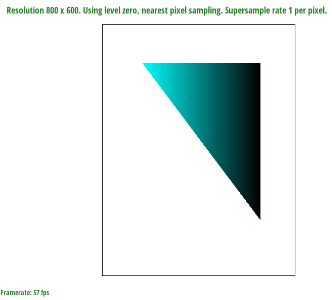This image has the top-left vertex colored blue; let us label this vertex A with variable . As we move from that vertex to the right side of the triangle, we see the visual effects of decreasing from 1 to 0.
Part 5: "Pixel sampling" for texture mapping
Pixel sampling is the act of taking textures and projecting it onto our image. When we perform nearest pixel sampling, we round our given point to the nearest pixel to receive a texture for our given pixel. On the other hand, bilinear pixel sampling takes the four nearest sample locations from our given point (by using the ceiling and floor functions on the uv coordinates) and using two helper lerp functions to get our final lerp; the final result is an averaging of the pixels close to our given uv point.
|
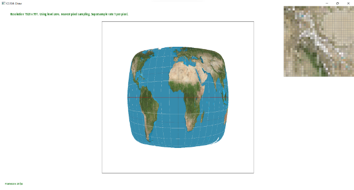
|
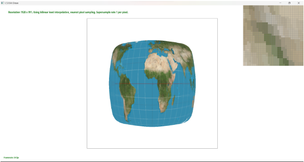
|
|
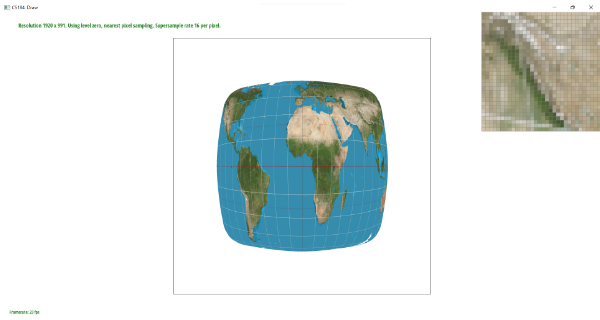
|
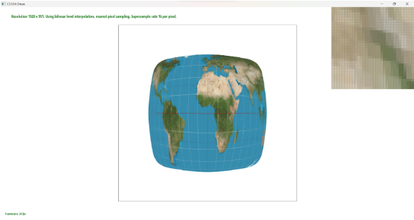
|
In the nearest pixel sampling pictures, we can see very distinct and crisp images with lines separating distinct colors, whereas in the bilinear pixel sampling pictures, we see more blended and blurred images with colors coming together. This is because nearest pixel sampling takes only the closest pixel, while the bilinear pixel sampling receives the four closest points and averages their values. When we have an image with a lot of colors close together, we will see a very large contrast between these two sampling methods.
Part 6: "Level sampling" with mipmaps for texture mapping
What I think about level sampling is that it takes into account the depth of the picture such that the image has a 3D perspective instead of looking 2D. In addition, taking into account level sampling makes the image look more realistic as it allows the human eye to see an image that is more realistic. We implemented texture mapping by taking if statements on psm and lsm. Using lsm to find the specific level of the triangle that we are trying to texture with, and to get the level, we used the following formula for it.
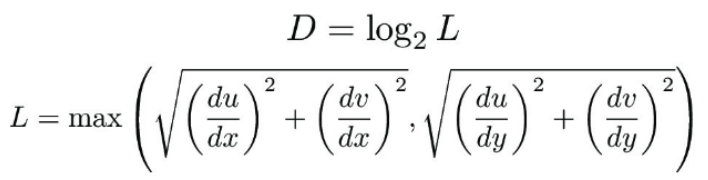Increasing the number of sampling rates definitely decreases speed when loading an image, as well as it increases the memory usage as our sample buffer size increases by the sampling rate. Using the nearest_pixel sampling is faster than using the bilinear pixel sampling. Between pixel sampling and sampling rate, I think sampling rate uses more memory and takes more time when the sample_rate increases, but it has better antialiasing power. Comparing the level sampling with pixel sampling, I think the level sampling is a bit slower if level sampling is not L_ZERO, and it uses more memory by a little bit as it needs to call functions and need more memory for variable declarations. In terms of antialiasing, I think it gets better as long as there aren’t too many colors at one point in time. Lastly, between the level sampling and sampling rate, I think sampling rate is lower memory usage, faster speed because level sampling needs to do everything the same for loop as rasterize_triangle with only sampling rate along with computing the level sampling. In terms of antialiasing, I think higher level has worse antialiasing, but I think lower level has similar antialiasing/better performance for the level sampling.
|
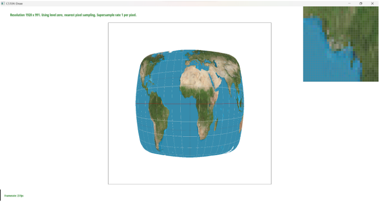
|
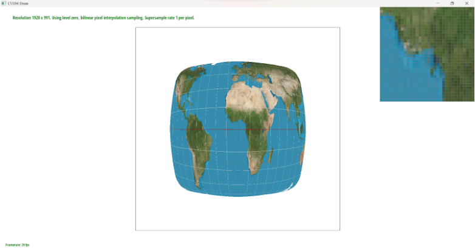
|
|
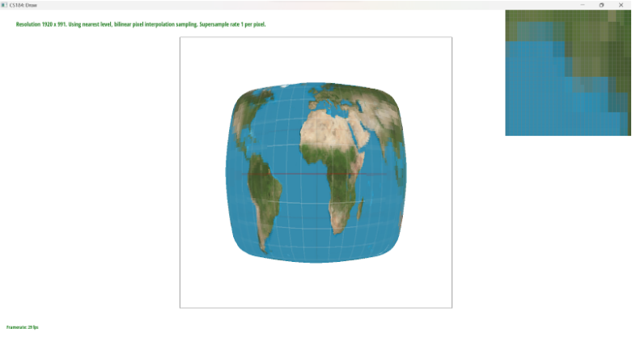
|
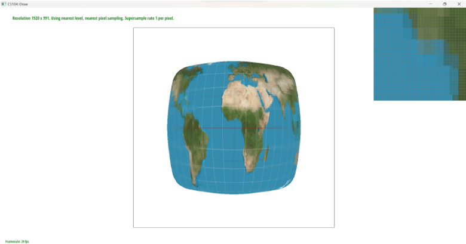
|
Section III: Art Competition
Not participating in Art Competition.